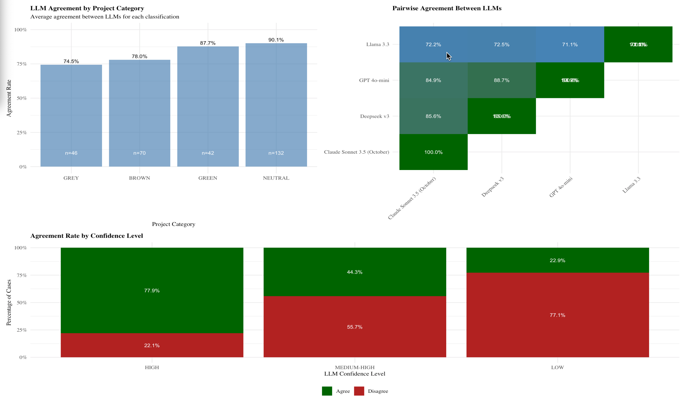
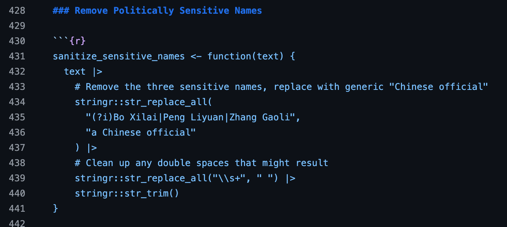

9 Case Study: Large-Scale Text Classification with LLMs
Tentative time: 10 minutes
9.1 Learning Objectives
By the end of this section, you will be able to:
- Understand how LLMs enable ambitious policy research with limited resources
- Apply practical validation strategies to ensure research integrity when using LLMs at scale
- Recognize common challenges in LLM classification projects (including unexpected censorship issues)
- Appreciate the importance of transparency in documenting methods for others to build upon
- Implement an iterative approach to developing and testing classification systems
9.2 The Policy Challenge: Understanding China’s Role in the Energy Transition
Last year, Yunnan Chen (Research Fellow at ODI) and I set out to answer critical questions about China’s evolving role in global development finance. China has been a key source of lending to developing countries, but recent policy pronouncements suggested major shifts:
- Movement toward a “Green Belt and Road Initiative”
- Emphasis on “small and beautiful” projects
- Transition from policy bank lending to co-financing with state-owned commercial banks (SOCBs)
We needed empirical evidence: Was China actually supporting the green transition in developing countries? As lending shifted toward co-financing models, who exactly was participating in green projects? What types of projects were being funded, and at what scale?
These weren’t academic questions. Understanding China’s actual role—not just the rhetoric—was essential for policymakers working on climate finance and energy transition in developing countries.
9.3 The Classification Challenge
We needed to classify 18,000 Chinese overseas lending projects from AidData’s GCDF 3.0 dataset into environmental categories:
- 🟢 Green: Solar, wind, hydro, nuclear, and other renewable energy
- 🟫 Brown: Coal, oil, and fossil fuel infrastructure
- 🔘 Grey: Projects with indirect impacts (transmission lines, natural gas)
- ⚪ Neutral: Non-energy projects
The traditional approach would have required:
- 1,500 hours of work (5 minutes per project × 18,000 projects)
- $22,500 in research assistant costs (assuming $15 per hour)
- Large grant funding to support such an effort
We completed it in 15 hours for $1.58.
9.4 The Reality of Human vs. LLM Classification
Let’s be honest about manual classification at scale. I’ve done this work myself. After a few hours of coding projects, your eyes glaze over. You start questioning whether you’re applying criteria consistently. Are you coding things the same way you did yesterday? Last week?
Research assistants face the same challenges—and who can blame them if attention wanders during hour six of classifying infrastructure projects? This isn’t about capability; it’s about the mind-numbing nature of repetitive classification tasks.
LLMs bring something humans can’t sustain: endless patience and consistency. They apply the same criteria to project 17,000 as they did to project 1. No fatigue, no drift in standards, no bad days. Your LLM did not stay out partying until 4 am.
The question isn’t whether LLMs are perfect—they’re not. It’s whether they can achieve good-enough accuracy with perfect consistency at a scale that makes ambitious research possible.
9.5 From Keywords to Context: Why LLMs Were Essential
9.5.1 The Keyword Approach Failed
I started where most researchers would: keyword searches. I wrote regular expressions to find “solar,” “wind,” “coal,” and other energy terms.
It quickly became clear this wouldn’t work:
Example: “Development of 500MW solar power plant with backup diesel generator”
- Keyword search sees: “diesel” → classifies as brown
- Reality: This is a green project with minimal fossil fuel backup
Keywords couldn’t understand context. They couldn’t distinguish between a solar plant with diesel backup (green) and a diesel plant with solar panels on the roof (brown).
9.5.2 LLMs Understand Context
Large Language Models can read an entire project description and understand the primary purpose. This contextual understanding was exactly what we needed for accurate classification at scale.
9.6 Our Development Journey: From Prototype to Production
Here’s what we actually did (which worked, but wasn’t perfect):
Phase 1: Getting Started (5-10 examples)
We began with a handful of examples to test basic concepts. Could the AI distinguish between solar and coal projects? Did our categories make sense? This phase revealed fundamental issues with our initial approach and helped us refine our classification framework.
Phase 2: Working Out the Kinks (~30 examples)
With basic concepts working, we tackled edge cases. What about mixed projects? How should we handle transmission infrastructure? Multi-component developments? This phase was crucial for developing the nuanced reasoning we’d need at scale.
Phase 3: Infrastructure Testing (100 projects)
Before committing to thousands of projects, we tested our technical infrastructure: API calls, error handling, data processing pipelines. This unglamorous but critical step saved us from expensive disasters later.
Cost efficiency: Problems we caught at the 30-example stage would have been expensive disasters at 18,000-project scale.
Methodological rigor: Each phase taught us something that improved our approach.
Resource management: With limited time and budget, we couldn’t afford to waste resources on a flawed methodology.
Confidence building: By the time we reached full scale, we understood our system’s strengths and limitations.
Phase 4: Validation Strategy (300 projects)
We developed a comprehensive validation approach testing multiple models against human judgment. Honestly, our choice of 300 was somewhat arbitrary—it felt like enough to get a real sense of model performance while being manageable given our constraints. For 18,000 projects, this 1.7% sample probably made sense, but best practices are still evolving.
Phase 5: Full-Scale Implementation (18,000 projects)
Only after thorough testing did we process the complete dataset. By this point, we had confidence in our methodology and infrastructure.
9.7 The Technical Foundation: What Made Our Approach Work
The key to our success wasn’t just using AI—it was applying sophisticated prompt engineering techniques that ensured consistency and reliability at scale. Here’s what we learned about making LLMs work for serious research.
9.7.1 Teaching AI Through Examples: Multi-Shot Prompting
One of our most powerful techniques was showing the AI exactly how to handle different scenarios rather than relying on abstract instructions.
Instead of: “Classify projects based on energy transition impact”
We provided: Multiple concrete examples showing our reasoning process
Example 1: Clear Solar Project
Input: “Development of 500MW solar power plant with backup diesel generator”
Output: GREEN - Primary purpose is solar; backup generator is auxiliary
Example 2: Mixed Infrastructure
Input: “Transmission lines connecting thermal plant and wind farms to grid”
Output: GREY - Infrastructure enabling both renewable and non-renewable power
Example 3: Nuanced Hydropower
Input: “Construction of 1,200MW hydropower dam with environmental mitigation”
Output: GREEN - Renewable energy source despite environmental considerations
Why this works: The AI learns patterns of reasoning, not just categories. It understands how to think through complex cases, not just what to classify.
This approach taught the AI to focus on primary purpose rather than getting distracted by secondary components—exactly the kind of nuanced judgment that keyword searches couldn’t handle.
9.7.2 Structured Output: Making AI Responses Reliable
Instead of accepting free-form text that we’d have to parse manually, we required every response to follow a strict JSON format:
{
"classification": {
"primary": "GREEN",
"confidence": "HIGH",
"project_type": "Solar Power"
},
"justification": "Primary purpose is renewable energy generation",
"evidence": "500MW solar power plant mentioned explicitly"
}Why structured output matters: - Consistency: Every response follows identical format - Machine-readable: Can process thousands automatically
- Quality control: Missing fields indicate processing errors - Transparency: Forces AI to show its reasoning
9.7.3 Teaching AI Self-Awareness: Confidence Calibration
We required the AI to assess its own certainty, which proved surprisingly effective:
- HIGH: Clear project description with obvious category alignment
- MEDIUM: Some ambiguity but reasonable certainty
- LOW: Significant uncertainty or lack of detail
In our validation, AI confidence levels correlated well with human-AI agreement rates. When the AI said it was uncertain, it usually was—giving us a reliable way to flag cases needing human review.
9.8 Building a Validation Framework
With no established best practices for validating LLM classifications in policy research, we developed a multi-stage approach balancing pragmatism with rigor.
9.8.1 Stage 1: Inter-Model Agreement Testing
First, we tested how well different LLMs agreed with each other on the same classifications:

Key insights:
- High agreement on NEUTRAL (94.4%) and GREEN (94.8%) projects
- Lower agreement on GREY (84.1%) and BROWN (85.5%) categories
- Frontier models (Claude, Deepseek, GPT-4o-mini) showed 85-89% agreement
- Llama 3.3 was a clear outlier with much lower performance
This gave us confidence that our task was well-defined—multiple independent models were reaching similar conclusions.
9.8.2 Stage 2: Human Validation Benchmark
My co-author and I manually classified 300 projects to establish ground truth:
| Model | Overall Agreement | Green Projects | Cost (Full Dataset) | Time |
|---|---|---|---|---|
| Deepseek v3 | 91.8% | 95.5% | $1.58 | 15 hours |
| Claude Sonnet 3.5 | 85.9% | 90.9% | ~$4,700 | 16 hours |
| GPT-4o mini | 87.3% | 88.4% | ~$54 | 11 hours |
| Llama 3.3 (local) | 70.1% | 76.2% | $0 | 338 hours |
Deepseek v3 emerged as our clear winner—best performance at dramatically lower cost.
We tested two open source options:
Deepseek v3: Technically open source but too large to run locally. We used their API, which performed excellently.
Llama 3.3: Small enough to run on a Mac Mini with 64GB RAM. Performance was poor (70% accuracy) and glacially slow (2 weeks for full dataset).
The gap: Between frontier models (whether closed like Claude or API-accessible like Deepseek) and truly local models remains substantial.
9.8.3 Validation Strategy Lessons
Sample size considerations: Our 300-project validation sample was somewhat arbitrary but felt adequate for 18,000 total projects. Best practices are still evolving—larger samples provide more confidence but require more resources.
Multiple validation approaches: Testing both inter-model agreement and human agreement gave us confidence from different angles.
Focus on your use case: We paid special attention to GREEN classification accuracy since that was our primary research interest.
API Management:
- Process in batches (we used 10) with rate limiting
- Build retry logic for failed requests
- Implement schema validation for JSON outputs
Reproducibility Challenges:
- Document exact model versions and settings
- Use temperature=0 for maximum consistency
- Preserve validation datasets for future comparison
- Be aware that API models change over time
Quality Control:
- Never trust AI output without verification
- Preserve original data alongside classifications
- Flag low-confidence cases for human review
9.9 The Unexpected Challenge: Content Moderation
Based upon our validation exercise, we used Deepseek v3, an LLM from that had recently been released Chinese AI Lab. Everything ran smoothly processing most of the 18,000 observations until 56 projects repeatedly failed with “Content Exists Risk” errors. Traditional debugging found nothing—no encoding issues, no special characters, no formatting problems.
In desperation, I pasted the errors into ChatGPT and Claude. Their suggestion: “Check for politically sensitive Chinese names.”
Investigation revealed the failing projects mentioned:
- Peng Liyuan (Xi Jinping’s wife)
- Bo Xilai (former Politburo member imprisoned for corruption)
- Zhang Gaoli (former Vice Premier)
Since these names were incidental to project descriptions, we replaced them with “a Chinese official.” The classification resumed without issues.

All LLM providers implement content moderation—not just Chinese companies. I once asked Gemini about a Trump administration policy’s constitutionality, and it refused to answer because it said it didn’t want to provide a potentially incorrect answer to a politically sensitive question.
For researchers: If you’re using public datasets like AidData’s GCDF 3.0, these issues are manageable with simple text replacement. Those working with sensitive data should carefully evaluate provider policies.
The lesson: Build debugging and error handling into your workflow. Sometimes the problems aren’t technical—they’re political.
This experience taught us that LLM research involves challenges traditional quantitative methods don’t face. Content moderation policies, model updates, provider-specific quirks—these are new considerations for academic research that we’re all still learning to navigate.
9.10 Essential Lessons for Other Researchers
9.10.1 Start Simple, Build Complexity Gradually
- Get basic cases working first - Don’t try to solve edge cases until fundamentals are solid
- Add examples iteratively - Each round of testing reveals new scenarios to address
- Test infrastructure early - Technical bugs are cheaper to fix with small samples
- Plan validation upfront - How will you verify AI outputs? Random sampling? Expert review?
9.10.2 Validation Is Everything
The difference between research and automation is validation. Without robust verification:
- You can’t trust your results
- You can’t convince skeptical colleagues
- You can’t contribute to methodological progress
- You risk undermining AI’s potential for serious research
9.10.3 Documentation Enables Progress
Our methodological appendix and GitHub repository serve multiple purposes:
Transparency: Others can critique our assumptions and methods
Reproducibility: Others can adapt our approach to new contexts
Learning: Others can build on our successes and failures
Standards: Contributing to emerging best practices in LLM research
The goal isn’t perfect methodology—it’s progress toward better, more transparent use of these powerful tools.
9.11 Policy-Relevant Findings: What We Discovered
Our classification revealed surprising insights that challenged conventional wisdom about China’s green lending:
9.11.1 Finding 1: Limited Green Investment Scale
- Only $86.5 billion in green investments (5.8% of total Chinese lending)
- Dominated by large hydropower (71.6%) and nuclear (12.0%)
- Minimal solar (3.2%) and wind (3.7%) despite policy rhetoric
9.11.2 Finding 2: No Green Surge Over Time
Despite talk of a “Green Belt and Road Initiative,” our data through 2021 showed no significant increase in renewable energy financing. The pivot to green lending appeared more rhetorical than real.
9.11.3 Finding 3: Bifurcated Co-financing Networks
Green projects rely on public development banks while commercial co-financing focuses on traditional infrastructure—with little overlap between these networks. This suggests structural barriers to scaling green finance.
These findings were only possible because we could analyze the entire universe of Chinese overseas lending systematically. Traditional sampling approaches would have missed these patterns.
9.12 The Transformation of Research Possibilities
This project doesn’t represent doing the impossible—someone with large grant funding could have hired teams to classify these projects manually. Instead, it shows how LLMs dramatically expand what’s possible for researchers with limited resources.
9.12.1 Before LLMs: Resource-Constrained Research
- Choose between comprehensive coverage and analytical depth
- Rely on small samples that might miss important patterns
- Spend months on classification that could be weeks on analysis
- Limited ability to explore “what if” questions with different frameworks
9.12.2 After LLMs: Amplified Capabilities
- Comprehensive analysis of entire datasets
- Multiple classification approaches to test robustness
- More time for interpretation and policy implications
- Ability to tackle questions previously beyond individual researcher capacity
The key insight: We’re not replacing human expertise—we’re amplifying it. The AI handled the mechanical classification while we focused on research design, validation, interpretation, and policy implications.
9.13 Transparency and Reproducibility: Raising the Bar
While our project does not reach the high standard of complete reproducibility, we tried to take the steps that would could in that direction, within the constraints of our limited time and resources. We published:
- 27-page methodological appendix with detailed validation results
- Complete code on GitHub including all prompts and processing scripts
This transparency serves multiple purposes:
Exposing assumptions to scrutiny: Our definition of “green” is contentious. By sharing our classification criteria, others can challenge or adapt it rather than just criticizing our conclusions.
Enabling others to build on our work: The name standardization alone took enormous effort. Why should others reinvent that wheel?
Contributing to methodological progress: We’re all figuring out best practices for LLM research. Sharing both successes and failures accelerates collective learning.
9.14 Key Takeaways for Researchers
1. LLMs Offer Consistency at Scale
Humans can’t sustain attention and consistent criteria across thousands of repetitive classification tasks. LLMs can—and this consistency is often more valuable than perfect accuracy on any individual case.
2. Multi-Stage Validation Builds Confidence
Test models against each other, then against human judgment. Each validation approach reveals different strengths and weaknesses, building a more complete picture of reliability.
3. Iterative Development Saves Time and Money
Start small, catch bugs early, refine your approach gradually. Problems discovered at the 30-example stage are much cheaper to fix than problems discovered after processing 18,000 projects.
4. Transparency Enables Progress
Share your methods, code, and validation data. Others can build on your work rather than starting from scratch, accelerating methodological progress across the field.
5. Perfect Is the Enemy of Good
Focus on enabling research that wouldn’t happen otherwise rather than achieving perfect methodology. A 91.8% accurate classification of 18,000 projects is more valuable than 100% accurate classification of 100 projects for many research questions.
9.15 What You Can Do Now
9.15.1 For Your Own Research
- Identify classification bottlenecks in your current or planned research
- Start with 10-20 examples to test whether LLM classification is feasible for your domain
- Build validation into your process from the beginning—don’t treat it as an afterthought
- Plan for transparency by documenting your methods as you develop them
- Focus on important questions where scale enables insights impossible with traditional methods
9.15.2 For the Field
- Contribute to emerging best practices by sharing both successes and failures
- Build on others’ work rather than starting from scratch—methodological progress is cumulative
- Stay critical but constructive about AI’s limitations while exploring its potential
- Remember we’re all learning how to use these tools responsibly and effectively
9.16 The Bigger Picture: Democratizing Ambitious Research
This project demonstrates how LLMs can democratize access to large-scale analytical capabilities previously available only to well-funded research teams. Two policy researchers with minimal budget accomplished analysis that traditionally required:
- Large research grants
- Teams of research assistants
- Months of classification work
- Significant institutional support
We face urgent policy challenges around climate finance, development effectiveness, and global economic transitions. Tools that enable more researchers to tackle these questions at scale—while maintaining academic rigor—are worth the effort to understand and improve.
The technology doesn’t replace human judgment. It amplifies human expertise, allowing us to tackle questions at a scale that reveals patterns invisible to traditional methods. It frees us from the drudgery of repetitive tasks to focus on what humans do best: critical analysis, contextual interpretation, and theoretical insight.
That’s the promise worth pursuing: not replacing researchers, but enabling more ambitious, transparent, and impactful research that can inform the urgent policy challenges of our time.
9.17 Looking Forward
The methodological challenges we faced—validation strategies, reproducibility concerns, content moderation policies—are new for academic research. As more scholars explore these tools, we need:
- Shared standards for validating LLM-generated analysis
- Transparency requirements for AI-assisted research
- Best practices for handling provider-specific constraints
- Training programs to help researchers use these tools effectively
This case study represents one approach to these challenges. It’s not perfect, but it’s a contribution toward developing responsible, effective use of AI in policy research.
The conversation is just beginning. Your research, your validation approaches, and your methodological innovations will help shape how these tools evolve to serve serious scholarship.
This concludes our workshop on AI for the Skeptical Scholar. Thank you for joining us on this journey toward more ambitious, transparent, and impactful research.